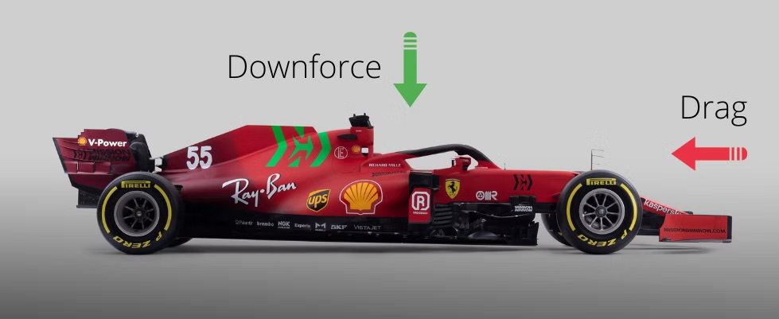
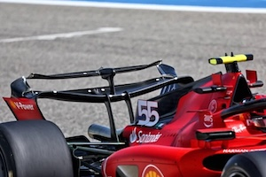
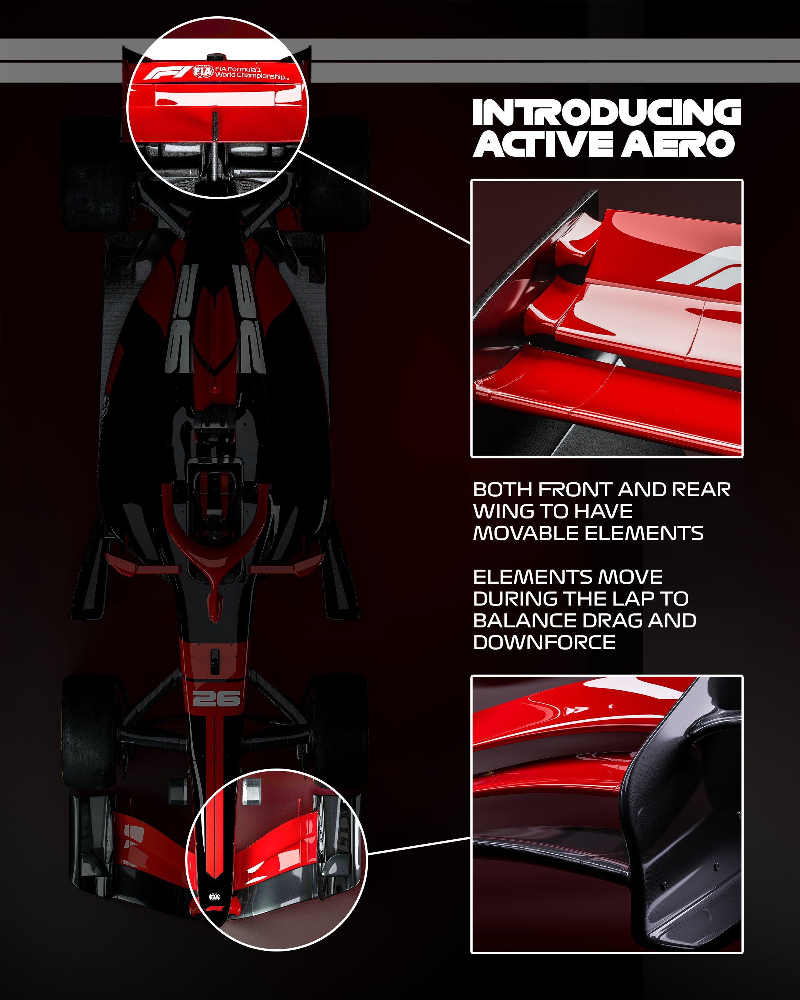

Harnessing the wind
Before we get into the complicated and technical terms, let us explore the basics:
- Downforce
- Drag
These are the two key terms regarding aerodynamics. Downforce is important in corners for the cars to "stick" to the ground in order to take the corners with higher speeds. Drag happens during high-speed straights where the air is prevented from escaping through the back of the car therefore slowing it down.

Now let us talk about overtake mode which has replaced DRS this year. For context, DRS was opening of the rear wing's upper flap when the driver was within 1 second of the driver in front of him. The 2026 cars now come with a 50/50 split of combustion engine and electric power along with active aero where both of the upper flaps in the front wing and the back move dynamically regardless of the DRS activation condition of being within 1 second of the driver in front. However, overtake mode is deployed according to that condition which gives drivers an electric boost.
Corner mode means high downforce in which both the upper flaps are extended upwards. Straight mode means less drag force used in high-speed straights which lets the air flow through the retracted flaps effortlessly.

